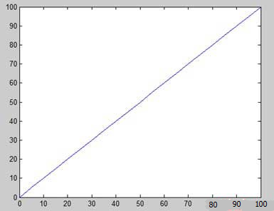

>技术杂谈>数学建模> MATLAB绘图 数学建模 袁文泉 2019-10-12 17:15 1999 100评论 在MATLAB中绘制函数图形的步骤如下： 1.先定义变量 x，通过指定的变量 x 值的范围，该函数被绘制； 2.然后定义函数， y = f(x)； 3.最后调用 plot 命令，如 plot(x, y)。 接下来我们通过例子绘制简单的函数 y = x , x 值的范围从0到100，增量为5。 在MATLAB中建立一个脚本文件，输入下述代码： x = [0:5:100]; y = x; plot(x, y) 运行该文件，MATLAB会显示下述图形：  更多文章、联系博主、技术交流、商务合作 喜欢 (7) or 分享 (0) Word常用快捷键 PPT常用小技巧，掌握这些你就是PPT高手 h5及c3新增的一些内容有哪些？ MVC的自我认识 Excel快捷键太多？你只要记住这5个常用的Excel快捷键就够了 Word常用快捷键 干货来啦，如何写好数学建模论文！ Word常用快捷键 MVC的自我认识 MongoDB数据库的使用方法 PPT常用小技巧，掌握这些你就是PPT高手